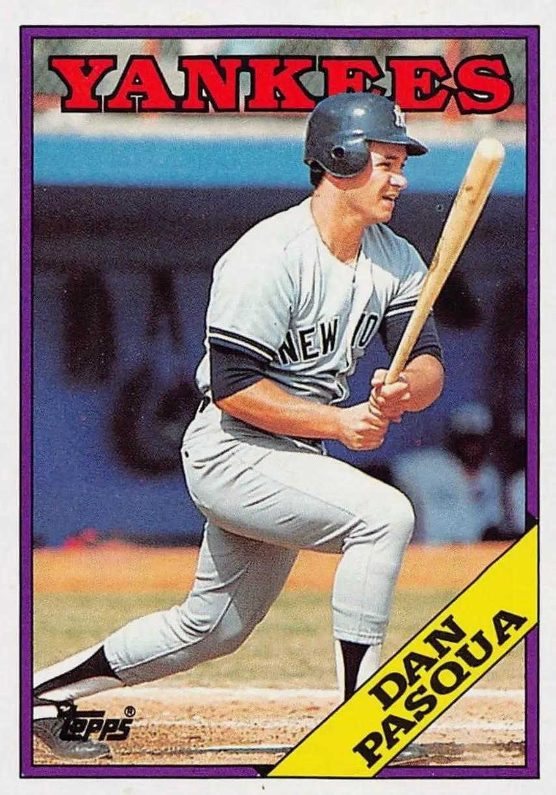

Dan Pasqua
Career Highlights & Facts
(Facts are AI-generated and may require verification)
- Was a key piece in the November 1987 trade that sent Rickey Henderson from New York to Oakland.
- Hit 16 home runs in only 92 games as a rookie in 1986.
- Homered in the 1993 American League Championship Series against the Toronto Blue Jays.
Would you like to find out more about Dan Pasqua?
Career Totals
| WAR | AB | H | HR | BA | R | RBI | SB | OBP | SLG | OPS | OPS+ |
|---|---|---|---|---|---|---|---|---|---|---|---|
| 10.7 | 2620 | 638 | 117 | .244 | 341 | 390 | 7 | .330 | .438 | .768 | 112 |
Statistics via Baseball-Reference.com
The Original Clue